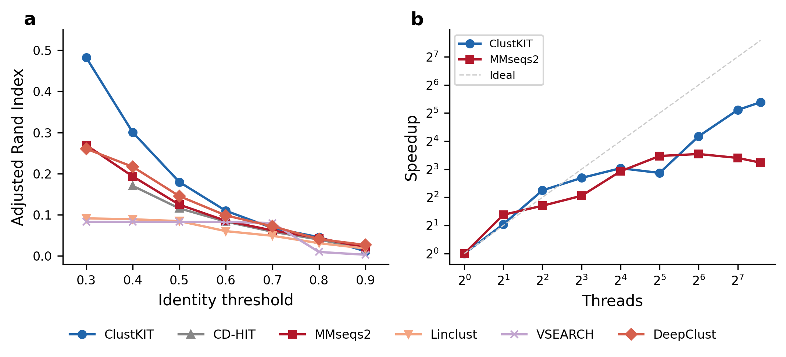

ClustKIT is an accurate protein sequence clustering tool that combines MinHash sketching, locality-sensitive hashing (LSH), banded Smith-Waterman alignment with BLOSUM62 scoring, and Leiden community detection to achieve high clustering accuracy at all identity thresholds, including the challenging low-identity regime (30-50%) where greedy heuristic methods lose sensitivity.
If you found ClustKIT useful, please cite ClustKIT: GPU-accelerated protein sequence clustering with locality-sensitive hashing and community detection. Steenwyk et al. 2026.
{kind=link}

(a) Clustering accuracy (Adjusted Rand Index) across identity thresholds on the Pfam benchmark (22,343 sequences, 56 families). ClustKIT achieves nearly twice the ARI of existing tools at low identity thresholds (t = 0.3). (b) Thread scaling: ClustKIT achieves 41.8x speedup at 192 threads.
Quick Start
These two lines represent the simplest method to rapidly install and run ClustKIT.
# install
pip install clustkit
# run
clustkit -i proteins.fasta -o output/ -t 0.5 --threads 8
Below are more detailed instructions, including alternative installation methods.
1) Installation
To help ensure ClustKIT can be installed using your favorite workflow, ClustKIT is available from pip and source.
Install from pip
To install from pip, use the following commands:
# create virtual environment
python -m venv venv
# activate virtual environment
source venv/bin/activate
# install clustkit
pip install clustkit
Note: the virtual environment must be activated to use clustkit.
Install from pip with GPU support
To install with GPU-accelerated Smith-Waterman alignment (requires CUDA 12.x):
pip install clustkit[gpu]
Install from source
Similarly, to install from source, we strongly recommend using a virtual environment. To do so, use the following commands:
# download
git clone https://github.com/JLSteenwyk/ClustKIT.git
cd ClustKIT/
# create virtual environment
python -m venv venv
# activate virtual environment
source venv/bin/activate
# install
pip install -e ".[dev]"
To deactivate your virtual environment, use the following command:
# deactivate virtual environment
deactivate
Note: the virtual environment must be activated to use clustkit.
2) Usage
To use ClustKIT in its simplest form, execute the following command:
clustkit -i proteins.fasta -o output/
Output files:
output/clusters.tsv– Cluster assignments (sequence_id, cluster_id, is_representative)output/representatives.fasta– Representative sequencesoutput/run_info.json– Run parameters and statistics